Soeda
Soeda · Fukuoka
Soeda
Highlighted on the Fukuoka map.
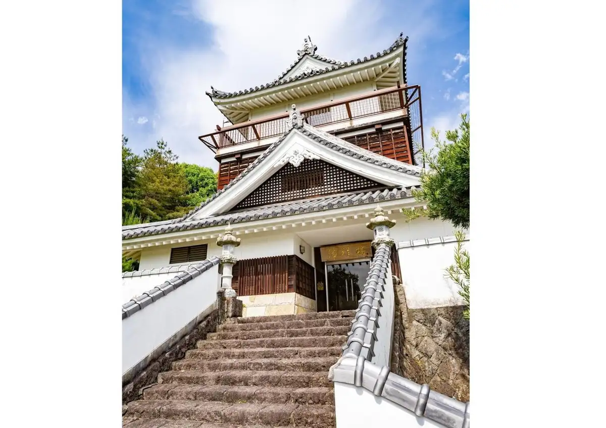
Dining
ヒシミツ
ヒシミツ
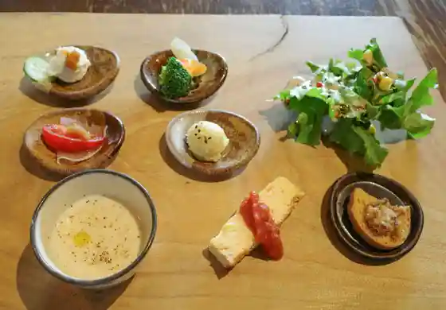
長谷の里
長谷の里
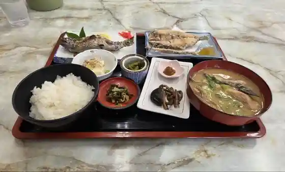
ひこ山食堂
ひこ山食堂
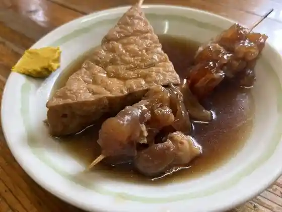
北の庄 添田店
北の庄 添田店
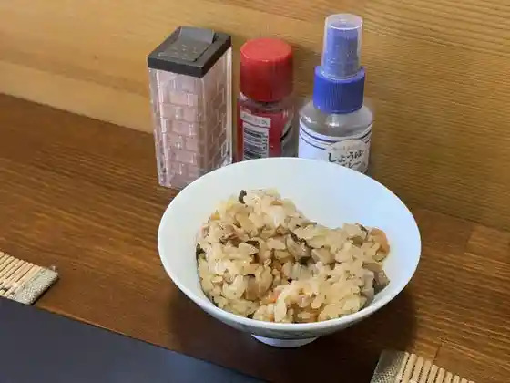
お食事処 JYOHAN
JYOHAN
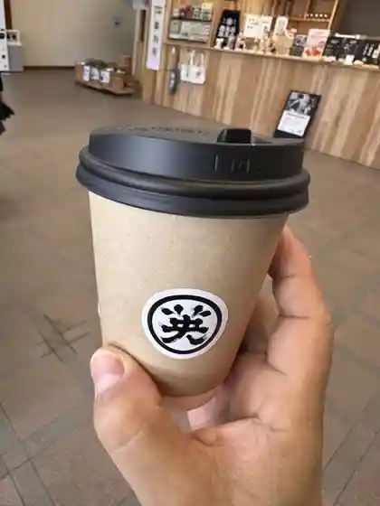
道の駅 歓遊舎ひこさん
道の駅 歓遊舎ひこさん
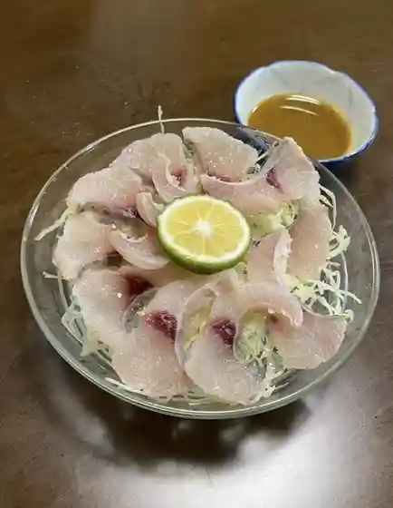
駒どり
駒どり
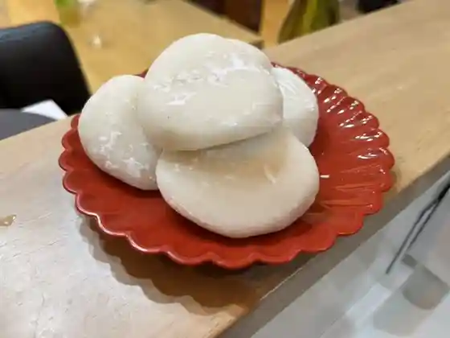
もち工房
もち工房
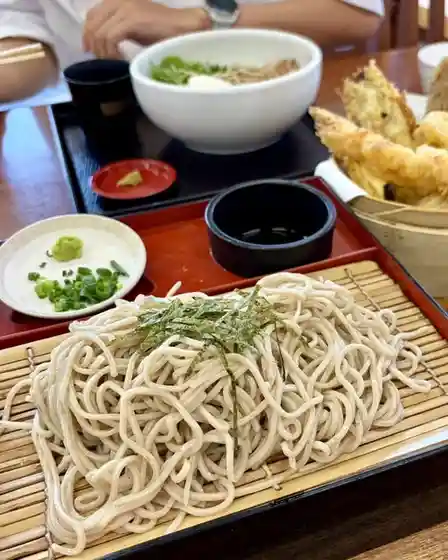
山びこうどん
山びこうどん
味の蔵めん処九ちゃん
味の蔵めん処九ちゃん
情熱的中華厨房 味都
情熱的中華厨房 味都
英彦岳食堂
英彦岳食堂
天麩羅割烹 味舌
天麩羅割烹 味舌
オオツカファーム
オオツカファーム
PANET
PANET
からあげまんてん 添田町店
からあげまんてん 添田町店
かとうショコラ
かとうショコラ
KaisenCLUB
KaisenCLUB
添田町めんべい工場
添田町めんべい工場
パン工房 麦の里
パン工房 麦の里
本場韓国料理 宋家 添田店
本場韓国料理 宋家 添田店
和
和
多幸焼工房 今川の里
多幸焼工房 今川の里
ヒコニワ
ヒコニワ
添田町旧車Cafe
Cafe
かじか庵
かじか庵
守破離
守破離
三鷹庵
三鷹庵
かふぇ けるん
かふぇ けるん
英彦山ホテル和
英彦山ホテル和
本格中華 味彩
本格中華 味彩
秀島本店
秀島本店
キッチン農家
キッチン農家
添田英彦商店
添田英彦商店
英彦山キッチンカーsakanano shippo号
sakanano shippo
居心家ふくろう
居心家ふくろう
だぼちゃん
だぼちゃん
レトロハウス
レトロハウス
白嶽料理店
白嶽料理店
FUKU-CHAN-STORE
FUKU-CHAN-STORE
丸喜食堂
丸喜食堂
カトル・カール洋菓子店
カトル・カール洋菓子店
鳥ぴん
鳥ぴん
お惣菜のみやざき
お惣菜のみやざき
庄屋
庄屋
元気野
元気野
もんじゃ
もんじゃ
やなぎや食堂
やなぎや食堂
甘味処 ゆめや
甘味処 ゆめや
てんゆう
てんゆう
あじ壷らっこ
あじ壷らっこ
Hishimitsu
Hishimitsu
Hikosan Shokudo
Hikosan Shokudo
Komadori
Komadori
Yanagiya Shokudo
Yanagiya Shokudo
Hase No Sato
Hase No Sato
Guen No Sho
Guen No Sho
Kitchen Noka
Kitchen Noka
Men Dokoro Fukakura An
Men Dokoro Fukakura An
Kumagai Dininig Room
Kumagai Dininig Room
Sowaka Tei
Sowaka Tei
Hikotake
Hikotake
Izakaya Kobuta
Izakaya Kobuta
Okonomitei Hana
Okonomitei Hana
Hikoniwa
Hikoniwa
Kisetsu Ryori No Mise Kajikaan
Kisetsu Ryori No Mise Kajikaan
Amakusa
Amakusa
Ochan Shokudo
Ochan Shokudo
Monja
Monja
Yakiniku No Sho
Yakiniku No Sho
Suekichi
Suekichi
Takoyaki Kobo Imagawa No Sato
Takoyaki Kobo Imagawa No Sato
Shiratake Ryoriten
Shiratake Ryoriten
Dabochan
Dabochan
Aji No Kura Noodles Kyu Chan
Aji No Kura Noodles Kyu Chan
Dogwood
Dogwood
Aji Tsubo Rakko
Aji Tsubo Rakko
Genkiya
Genkiya
Atariya Bangasa
Atariya Bangasa
Toripin
Toripin
Udon No Kita No Sho Soeda
Udon No Kita No Sho Soeda
Aji No Kura Men Dokoro Kyuchan
Aji No Kura Men Dokoro Kyuchan
Karaage Manten Soedamachi
Karaage Manten Soedamachi
Furoku
Furoku
Chinese Dining Ranchiu
Chinese Dining Ranchiu
Sho Ya
Sho Ya
Yamamoto Pastry
Yamamoto Pastry
Stay
ひこさんホテル和
ひこさんホテル和
Sights
Hidehiko Yama
Hidehiko Yama Suropuka
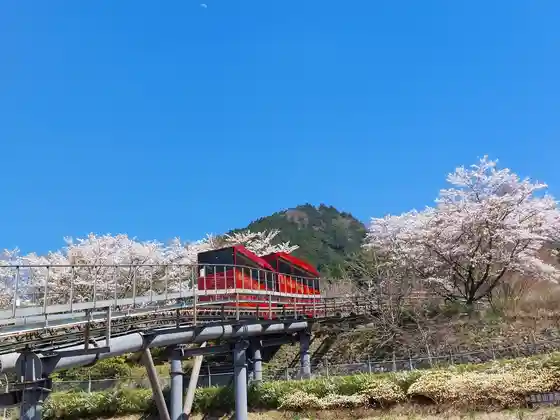
Hidehiko Yama Shrine Hohei Dono
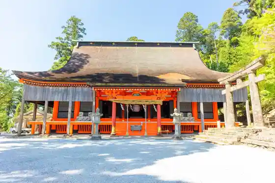
Takasumi Shrine
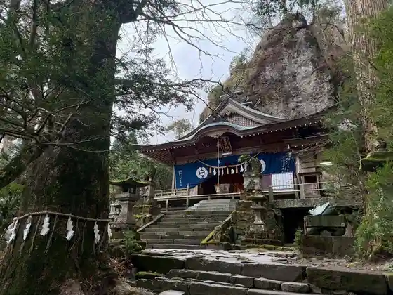
Membei Soeda Kojo
Takanosu Hara Highlands no Susuki
Ko Dai Shrine (Ise Shrine) (Soeda)
Hidehiko Yama no Autumn Leaves
Roadside Station Kan Yu Sha Hikosan
Takanosu Hara Highlands
Foresutoadobencha Soeda
Ganseki Shiro
Hanamigaiwa Park
Kodomowakuwaku Park (Roadside Station Kan Yu Sha Hikosan)
Samuraihausu
Shinozaki Kawazakana Mise Tsuri Hori
Hidehiko Yamadai Gongen Sha
Hidehiko Yama Flower Garden
Otsuka Farm Choko Workshop
Soeda Park
Kuahausuhapinesu
Soeda Folk History Museum (Zai Kura Bo)
Oni Sugi
Soeda Joi
HIKONIWA
Kyu Kameishi Bo Garden
Hidehiko Yama Shugendo Kan
Kaminaka Moto Tera Yakushido
RURAL GLAMPING (Hoshi to Niji)
Hidehiko Yama Shrine Do no Torii
Hidehiko Yama Garagara
Shin Kura Kyo
Mochi Workshop
Yuno Komoto Ho
Kyu Kazu Yambe House
HIKOSAN GARDEN CAMP
Takanosu Yama
Café Carin Kafe Kerun